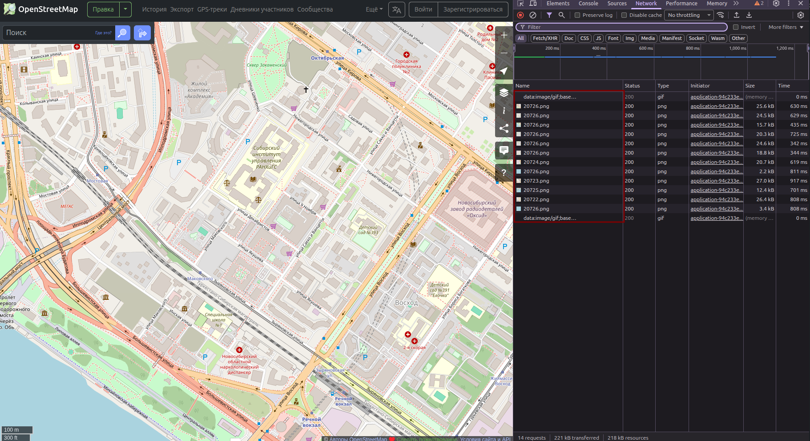
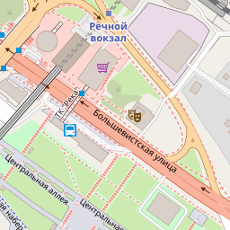
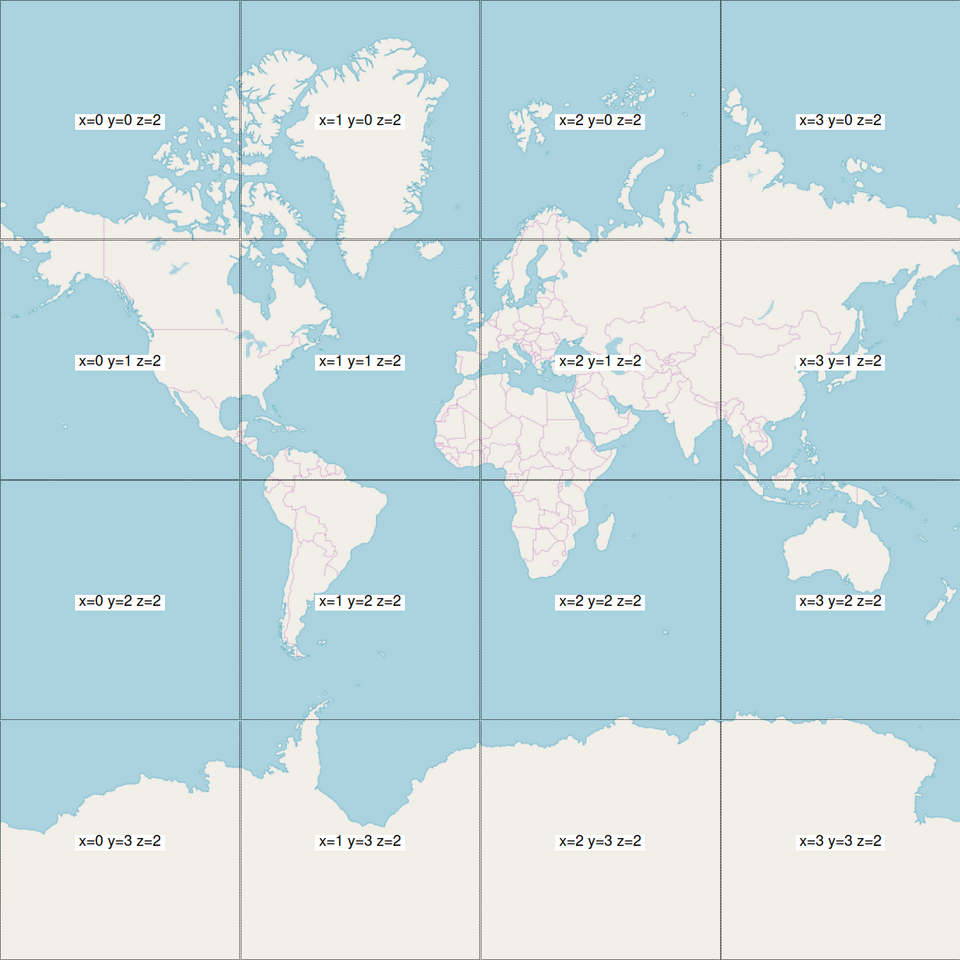

Получение тайлов карты (Open Street Map)
Тайлы - это изображения небольшого размера (одинакового), являющиеся фрагментами большого изображения. В рамках работы с картами - это квадратные (обычно 256х256 пикселей, могут быть и 512x512) изображения, формирующие карту мира.
Они используются в веб-картографии (Google Maps, Яндекс Карты, OpenStreetMap) для быстрой загрузки: браузер загружает только те тайлы, которые видны на экране, экономя трафик и память.
Например, если открыть в браузере карту [OpenStreetMap.org](www.openstreetmap.org), перейти в режим разработчика (CTRL + SHIFT + I) во вкладке Network, мы увидим следующую картину:

, где увидим, что были загружены несколько изображений *.png со странными названиями файлов.
Например, 20726:

Этот файл был получен при помощи запроса на сервер OpenStreetMap -
https://tile.openstreetmap.org/16/47867/20726.png.
OSM-карты (и не только они) присваивают каждому изображению свои наименования. Правила наименований описаны в статье:wiki.openstreetmap.org/wiki/Slippy_map_tilenames.
Правила наименований тайлов
Все тайлы имеют размер
256 × 256пикселей форматаPNG;Каждое значение масштаба карты (zoom level) является директорией, каждый столбец также является директорией, в которой находятся изображения;
Ссылка (
URL) на получения конкретного файла (*.png) формируется в формате:/zoom/x/y.png
Например, для масштаба карты 2 (zoom = 2) будут след. наименования:

Можно заметить, что:
- Координата Z - не меняется, Z = 2.
- Координаты X - это столбцы матрицы, Y - строки матрицы.
Тайл серверы
С названиями координат изображений мы определились, но первая часть URL (например, tile.openstreetmap.org) отвечает за сервер, на который вы или ваше приложение будет отправлять запрос.
Name |
URL template |
zoomlevels |
|---|---|---|
OSM ‘standard’ style |
https://tile.openstreetmap.org/zoom/x/y.png |
0-19 |
OpenCycleMap |
http://[abc].tile.thunderforest.com/cycle/zoom/x/y.png |
0-22 |
Thunderforest Transport |
http://[abc].tile.thunderforest.com/transport/zoom/x/y.png |
0-22 |
MapTiles API Standard |
https://maptiles.p.rapidapi.com/local/osm/v1/zoom/x/y.png?rapidapi-key=YOUR-KEY |
0-19 globally |
MapTiles API English |
https://maptiles.p.rapidapi.com/en/map/v1/zoom/x/y.png?rapidapi-key=YOUR-KEY |
0-19 globally with English labels |
Масштаб (zoom levels)
Ниже приведена таблица по каждому уровню масштабирования (от 0 до 19). Более подробная таблица находится здесь.
zoom level |
tile coverage |
number of tiles |
tile size(*) in degrees |
|---|---|---|---|
0 |
1 tile covers whole world |
1 tile |
360° x 170.1022° |
1 |
2 × 2 tiles |
4 tiles |
180° x 85.0511° |
2 |
4 × 4 tiles |
16 tiles |
90° x [variable] |
n |
2<sup>n</sup> × 2<sup>n</sup> tiles |
2<sup>2n</sup> tiles |
360/2<sup>n</sup> ° x [variable] |
12 |
4096 x 4096 tiles |
16 777 216 |
0.0879° x [variable] |
16 |
… |
2<sup>32</sup> ≈ 4 295 million tiles |
… |
17 |
… |
17.2 billion tiles |
… |
18 |
… |
68.7 billion tiles |
… |
19 |
Maximum zoom for Mapnik layer |
274.9 billion tiles |
… |
Математика получения тайлов
1) Первое что нужно сделать - это посчитать количество тайлов, которое мы хотим отобразить на карте (см. таблицу выше Таблица тайл-серверов): .. math:
(a + b)^2 = a^2 + 2ab + b^2
e^{i\pi} + 1 = 0